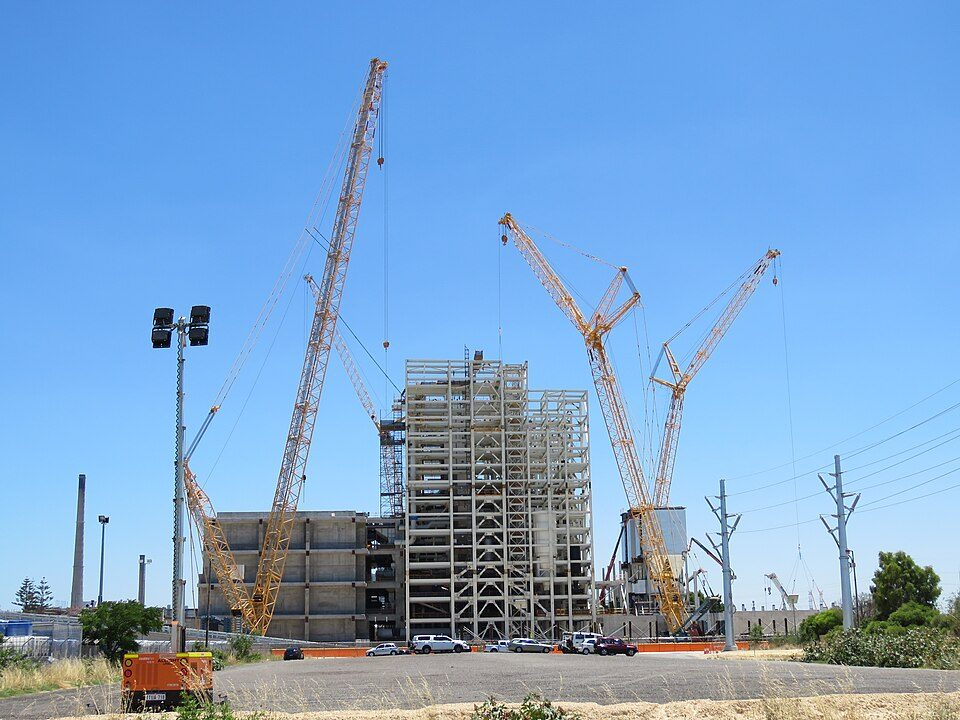
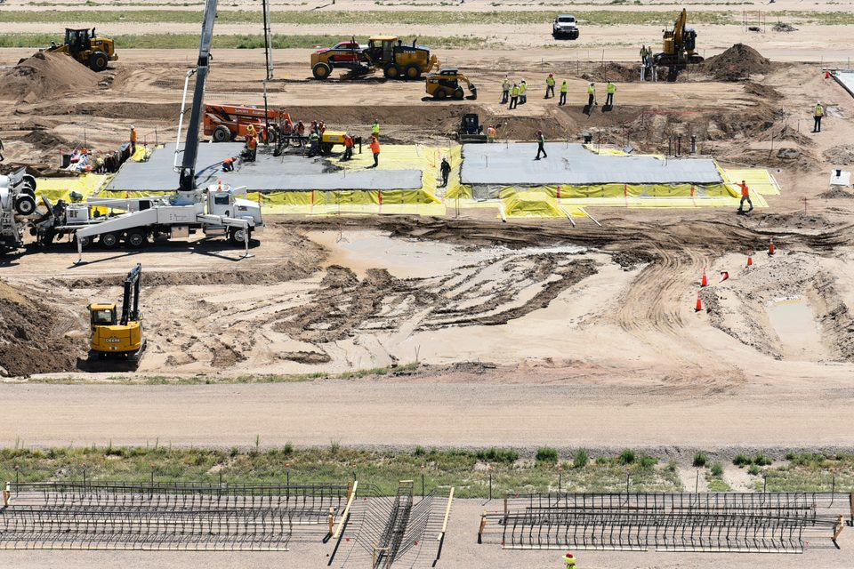

プラント業界の仕事の進め方：プロジェクトの流れ、契約の形、チームの体制、調達と建設、管理の手法
要点まとめ
石油・ガス・化学などのプラントは、1つずつ条件が違う「一品もの」で、何年もかけて設計・調達・建設します。この記事では、プラントの建設プロジェクトがどう進むかを、厚生労働省の職業能力評価基準、国際協力機構（JICA）の標準入札書類、大手エンジニアリング会社の公式情報でまとめました。業界の規模や会社の数字はプラントエンジニアリングとは、略語はプラント業界で使われる英語の略語一覧にまとめています。

プラントの仕事は「プロジェクト」で動く
決められた期間と予算で、1つのプラントを完成させる
契約金額は数百億〜数千億円。複数の会社で共同受注することも
厚生労働省の職業能力評価基準は、エンジニアリング業を、プロジェクトを所期の目標どおりに進める「プロジェクト・マネジメント」の機能が重視される業種だとしています[7]。東洋エンジニアリングは、契約金額は数百億円から数千億円にのぼり、複数の企業がコンソーシアムをつくって共同で受注する場合もあると説明しています[2]。
プロジェクトの一生
- 営業・提案
顧客に技術と商務の両面で提案する
提案業務を「プロポーザル」と呼ぶ[3]
- FS
事業化調査。投資の判断に必要な採算性を確かめる
プロジェクトの最上流[5]
- FEED
基本設計。この成果をもとにEPCの入札が行われる
- 契約
入札・選定のあと、発注者の最終投資決定（FID）を経て契約が発効する例も
- EPC
設計（基本設計→詳細設計）、調達、建設
- 完成
試運転の前の検査を終え、試運転できる状態にする
JICAの書類の「Completion」[10]
- 試運転
原料を入れて運転し、性能保証を満たすかを試験する
- 引き渡し
決められた品質の製品が出て、初めて顧客に引き渡す
- 保証期間
引き渡しから一定の期間、不具合を直す責任を負う
JICAの書類の初期値は365日[10]
LNGプラントの例：契約の発効から引き渡しまで約7年
日揮は、LNGプラントの建設期間を4〜5年と説明
| 時期 | できごと |
|---|---|
| 2018年10月 | 発注者が最終投資決定（FID）。EPC契約が正式に発効[9] |
| 2025年6月30日 | LNGの初出荷[12] |
| 2025年12月1日 | 第1フェーズの引き渡しが完了[13] |
日揮は2018年の発表で、LNGプラントの建設期間は4年から5年必要としています[9]。この案件は、モジュール（大きな部品のまとまり）を別の場所で造って現地で据え付ける方法で建設されました[12]。
契約の形と関係者
| 契約の形 | 内容 |
|---|---|
| ランプサム（定額請負） | 費用の積み上げをせず、プラントに必要な一切の費用を総額で契約の初めに決める[14][15] |
| 実費精算（コストプラス） | かかった費用をもとに精算する[15] |
| フルターンキー・ランプサム | 発電プラントで、設計から引き渡しまで一括・定額で請け負う形[16] |
| 設計・調達・供給のみ | 建設は発注者が受け持ち、設計と機器・資材の調達・供給だけを請け負う形[16] |
国際的な契約書のひな形は、日本の団体がつくってきた
エンジニアリング協会のモデルフォームは、世界銀行の書類の参考にもなった
エンジニアリング協会（ENAA）は、プロセスプラントの国際標準契約書（モデルフォーム）を1986年につくり、改訂を重ねています[16]。世界銀行の標準入札書類の初版（1996年）は、その1992年改訂版を参考につくられたとしています[16]。JICAの円借款のプラント向け標準入札書類も、ENAAのモデルフォームを土台にしています[10]。
機器はメーカーに、工事はサブコンに頼む
元請けのエンジニアリング会社が、多くの会社をまとめる
東洋エンジニアリングは、プラントに必要な機器・資材は全て社外のメーカーに製作を依頼し、工事はサブコンと呼ばれる下請け業者を使って行うと説明しています[3][2]。LNGカナダは、日揮グローバルとフルアのジョイントベンチャーが請け負いました[12]。
チームの体制
プロジェクトマネージャーを頂点に、案件ごとに組織をつくる
コストエンジニアは「プロジェクトマネージャーの参謀役」
日揮は、プロジェクトマネージャーを筆頭に、専門のエンジニアと各部門のスタッフでチームを組むと説明しています[1]。東洋エンジニアリングは、受注するごとにプロジェクトマネージャーを頂点とした組織を立ち上げるとしています[2]。厚生労働省の基準では、プロジェクトマネジメントは設計・調達・輸送・建設などの各部門と連携しながらプロジェクトを指揮・統括する仕事です[17]。
調達の進め方
厚生労働省の基準は、調達を設計と建設の間にある活動としています[20]。機器・資材の調達は、次のように進みます。
- 準備
ベンダー（メーカー）の調査と調達計画
- 引き合い
見積もりを依頼する書類をつくり、依頼先を選ぶ
- 評価
価格・納期などの商務面と、技術面の両方で見積もりを評価
技術面の検討は設計部門が担う[21]
- 発注
契約を交渉して発注する
- 製作
図面の受け取りや製作の進み具合を管理する（エキスペダイティング）
- 検査
検査計画に沿って検査し、検収する
- 輸送
建設現場まで運ぶ。実際の運送は専門の業者が多い
日揮は、数万点の機材でできたプラントの調達を、引き合いから現場への輸送まで一貫して責任を持って行うとしています[24]。
建設の進め方
現場の準備から、基礎・鉄骨・機器・配管・電気へ
建設が終わったら検査をして、試運転に入る
千代田化工建設は、建設は現場の事前調査、水の確保、土地の造成、労働者キャンプの設営から始まり、基礎工事、鉄骨やコンクリートの構造物、配管・機器の設置、電気・制御システムの配線、保温・塗装へと進むと説明しています[6]。建設が終わると検査をし、試運転が始まります[6]。

ピークには、何万人もの人が現場で働く
60か国以上・120職種の1日3万人で建設した例も
千代田化工建設は、巨大プロジェクトの建設を、60か国以上の国籍で120の職種の1日30,000人で進めた例を挙げています[6]。東洋エンジニアリングも、最盛期の現場では数千・数万人規模の作業員をまとめるとしています[2]。別の場所でモジュールを造り、専用の船で現地に運んでつなぐ工法も使われます[6]。
プロジェクト管理の道具
| 手法 | 使いみち |
|---|---|
| WBS・ガントチャート・PERT | 作業を分けて日程計画をつくる[27]。日揮は人・資材・資金・図書・時間をWBSで統一して管理[1] |
| CPM（クリティカルパス法） | 工事の工程計画をつくる[28] |
| アーンドバリュー（出来高）法 | 出来高をもとにコストの差を分析する[29] |
| リスク管理とコンティンジェンシー | リスクを洗い出して対策を決め、予備費（危険準備費）を見積もりに入れる[30][14] |
| キックオフ・要求変更書 | プロジェクトの始まりの会議と、変更の手続き[31] |
| 独立したレビュー | 設計や計画を、担当外のレビューアーが確かめる（千代田のCold Eye Review）[32] |
見積もりの精度は、設計が進むほど上がる
構想段階はプラス100%まで、入札段階はプラス15%程度までの幅
米国の団体AACEは、見積もりを設計の進み具合で5つのクラスに分けています[33]。設計の完成度が0〜2%の構想段階（クラス5）では、実際の費用は見積もりの−20〜−50%から＋30〜＋100%の幅になるとしています[33]。65〜100%まで進んだクラス1では、−3〜−10%から＋3〜＋15%の幅です[33]。
海外の現場で働く
会社人生の2割近くを海外で働く例も
帰国休暇は4か月に1度、10日前後（東洋エンジニアリングの例）
東洋エンジニアリングの採用サイトは、総合職では会社人生の20%弱を海外で働くのが一般的で、設計部署は数か月から長くて1年未満の赴任が多いとしています[36]。帰国休暇はおおむね4か月に1度、移動日を除いて10日前後です[36]。千代田化工建設は、−50℃のロシアから+50℃のカタールまでの現場を挙げています[6]。
今回確認できなかった点
- 「機械的完成」「性能保証運転」という日本語の公的な定義（JICAの英文の定義で説明した）
- EPCM契約の公的な定義
- HAZOP（危険性の検討会）の進め方の公的な説明
- 1つのプロジェクトの本社側の人数と、国内・中小規模の案件の期間の目安
- エンジニアリング協会の「適正な契約金額・工期およびリスク分担」の資料の本文（読めなかった）
出典（36件）
閲覧日はいずれも2026年11月10日
- プロジェクトマネジメント（日揮ホールディングス）
- 採用サイト 職種と専攻・部門紹介（東洋エンジニアリング）
- 採用サイト BUSINESS MODEL（東洋エンジニアリング）
- ビジネスモデル（千代田化工建設）
- PMC/FS/FEED（日揮ホールディングス）
- ビジネスモデル 建設（千代田化工建設）
- 職業能力評価基準「エンジニアリング業」（厚生労働省）
- ビジネスモデル FEED（千代田化工建設）
- カナダの大型LNGプラント建設プロジェクトが正式契約発効（2018年10月2日）（日揮）
- Standard Bidding Document under Japanese ODA Loans: Procurement of Plant Design, Supply and Installation（2023年10月）（国際協力機構（JICA））
- ビジネスモデル 試運転（千代田化工建設）
- LNG CanadaプロジェクトのLNG初出荷を達成（2025年7月1日）（日揮ホールディングス）
- LNG Canadaプロジェクト（第1フェーズ）の引き渡しを完了（2025年12月8日）（日揮ホールディングス）
- エンジニアリング用語集（日揮ホールディングス）
- 能力ユニット「契約マネジメント」（厚生労働省）
- ENAAモデルフォーム国際標準契約書（エンジニアリング協会）
- 職業能力評価基準【エンジニアリング業】職務：プロジェクトマネジメント（厚生労働省）
- 新卒採用 日揮グループの職種（日揮ホールディングス）
- 職業能力評価基準【エンジニアリング業】職務：発注品工程管理（厚生労働省）
- 職業能力評価基準【エンジニアリング業】職務：購買（厚生労働省）
- 能力ユニット「見積評価」（厚生労働省）
- 職業能力評価基準【エンジニアリング業】職務：検査（厚生労働省）
- 職業能力評価基準【エンジニアリング業】職務：輸送管理（厚生労働省）
- 調達（日揮ホールディングス）
- 建設（日揮ホールディングス）
- 職業能力評価基準【エンジニアリング業】職務：工事管理（厚生労働省）
- 能力ユニット「プロジェクト全体のマネジメント」（厚生労働省）
- 能力ユニット「工事工程計画の策定」（厚生労働省）
- 能力ユニット「コスト・マネジメント」（厚生労働省）
- 能力ユニット「リスク・マネジメント」（厚生労働省）
- 能力ユニット「品質マネジメント」（厚生労働省）
- ビジネスモデル 設計（千代田化工建設）
- Recommended Practice No. 18R-97 Cost Estimate Classification System（公開版）（AACE International）
- 書籍『PMBOK®ガイド』第8版日本語版を発行しました。（PMI日本支部）
- PMBOKガイド第8版 フライヤー（PMI日本支部）
- 採用サイト 海外勤務FAQ（東洋エンジニアリング）
写真・画像の出典（2件）
- 建設中のごみ発電プラント（オーストラリア、2020年）
写真: Calistemon／Wikimedia Commons（CC BY-SA 4.0） - 基礎工事が進むプラントの建設現場（米国）
写真: PEO ACWA／Wikimedia Commons（CC BY 2.0）